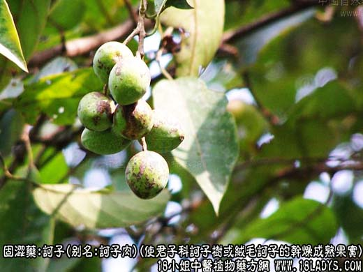
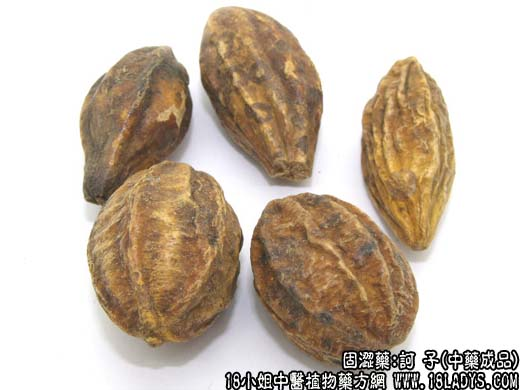
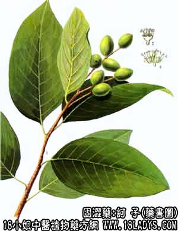

诃子为少常用中药。始载《唐本草》，原名诃黎勒。（译音）
别名：诃子肉（处方用名）。
来源：为使君子科植物落叶乔木诃子树或绒毛诃子的干燥成熟果实。
原产印度、缅甸等地，过去多为进口。现我国大量栽培和生产，很少进口。
产地：主产于云南、广东、广西等地。
性状鉴别：果实呈长圆形或卵形，长约1.5~3厘米，直径1.5~2厘米。表面黄绿色至黄棕色，微带光泽，有不规则的皱纹、抽沟及5~6条突起的纵棱、基部有果柄脱落后的疤痕。果肉质坚实。果核一枚、黄白色、粗糙、极坚硬。内含种子一枚，呈狭长纺锤形，种皮薄，紧包于种仁之外，种仁郛白色。气微，味酸涩。
以黄棕色，坚实，肉厚，有光泽者为佳。
主要成分：含鞣质20%~40%、其中成分为主诃子酸、诃子素、原诃子酸等。
药理作用：敛肺、涩肠、其原理为：
1、抗菌。对痢疾杆菌有强力的抑制作用，其原理可能为鞣质使菌体蛋白凝固。
2、抗病毒。用鸡胚实验模型以体外直接试验和体内预防作用方法筛选，发现诃子有抗流感病毒作用。
3、收敛。对菌痢或肠炎所形成的粘膜溃疡有保护作用。
4、解痉。诃子素具有类似罂粟硷的平滑肌解痉作用。
炮制：诃子肉：去核取肉用。诃子：用时捣碎。
性味：酸、苦、平。
归经：入肺、大肠经。
功能：敛肺，涩肠，下气。
主治：久泻久痢，脱肛便血，久咳失音，痰咳喘息。
临床应用：为治疗久泻、久咳的常用药。
1、用于久泻、久痢，治慢性痢疾和慢性肠炎，取其有收敛和抗菌作用。煨诃子的效果较好，但极少单用，多配其他固涩药，例如治久痢脓血配五倍子、乌梅、樗根白皮之类；治久泻配白术、芡实。虚寒泄泻严重者配罂粟壳、干姜、橘红等。方如诃子散。
2、用于久咳。治肺结核之干咳、痰血，用生诃子配海浮石、瓜萎皮；治慢性咽喉炎之久咳失音，则配桔梗、甘草等，方如诃子清音汤；口含生诃子有一定帮助，但诃子味甚苦，和蜂蜜一起制丸含服更好。最近报道治慢性气管炎可用诃子3g，五味子9g，煮猪肺一具服食，方如补肺汤。
使用注意：1、外感咳嗽、急性肠炎、痢疾早期不宜用诃子，以免留邪；
2、诃子生用止咳下气开嗓较好，煨用涩肠止泻较好，对胃剌激性亦减轻；
3、前人曾谓诃子“苦能泄气，真气太虚者宜少用之。”现代临床观察，诃子确有降低消化能力的副作用，故脾气虚，表现消化不良者宜少用。
用量：1.5~4.5g。大剂可用至6~9g。
处方举例：诃子散：煨诃子9g，罂粟壳6g，干姜4.5g，橘红6g，共研细末，每次开水送服6~9g。
诃子清音汤：生诃子1个，桔梗30g，甘草30g，其研细末，每次6g，水煎服。
补肺汤（北京中医研究院方）：诃子3g，五味子9g，猪肺1具。将猪肺洗净与药同煮极烂，去药，分数次食肺和汤，治慢性气管炎合并肺气肿之久咳患者。